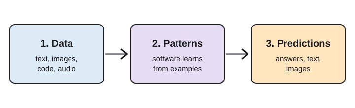
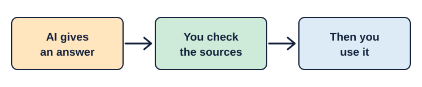

What is AI?
Explanation
AI is computer software that learns from large amounts of data, such as text, images, code and audio taken from websites, dictionaries and other data sets. It uses what it learns to form information, find patterns and make predictions.
It imitates parts of human learning and reasoning in a matter of seconds, whereas a person would have to think critically and research to find certain answers. AI improves through experience and corrections.

How AI helps me
My experience
One way AI helps me is with organizing my schedule and with studying. It benefits me when I create notes and need to understand a concept from many different perspectives.
The catch is that you have to give it the information you want to expand on. Much of the data it predicts its answers from can be false or biased, because it comes from huge data sets. If you give it a base, it can build on that.
When AI goes wrong: a fake video meeting
Verified fact
An employee at a multinational company in Hong Kong received a message from someone who seemed to be the company’s UK-based CFO, asking for a transaction. The worker first suspected a phishing email, but then joined a video call where everyone seemed to be present. The worker put the doubts aside because the people on the call looked and sounded like real colleagues. In fact, everyone on the call except the worker was fake.
By the end of the call, the worker had made 15 transfers to five different bank accounts. The worker only realized it was a scam about a week after the first message, after checking with the company’s head office. The scammers used deepfake technology on publicly available video and other footage of real people to create the fakes, and that is what tricked the worker.
- 15 transfers
- 5 bank accounts
- About US$25.6 million (HK$200 million)
- Everyone else on the call was fake
See Sources: CNN, The Star and the South China Morning Post.
My interpretation
This is why it is important to verify before making any decision. You never know what is real and what is fake, given how advanced AI has become.
Power demand and outages
Verified fact
AI depends on electricity and on people supervising it. Reuters reports that PJM, the largest power grid operator in the United States, expects about 32 gigawatts of extra demand by 2030, with all but two of those gigawatts coming from data centers. The report also says electricity bills were projected to rise by more than 20% in parts of PJM’s territory in the summer of 2025.
In a different case, the Financial Times reported that Amazon’s cloud unit, AWS, had two outages in December 2025 stemming from errors involving its own AI tools. One was a 13-hour interruption after engineers let its Kiro coding tool make changes. Amazon told Reuters it was a brief event affecting one cost-management service in one region, and it blamed user error.
See Sources: two Reuters reports.
My interpretation
The accounts of the Amazon outage disagree about who was at fault, but both cases show that AI depends on physical systems and on people to check what automated tools do.
What can help
My interpretation
One way to improve AI is for companies to add verification steps, and for people to check AI’s work before submitting it or using its output.
AI can also produce bias and errors, which is why you need to verify the sources and make sure the information is accurate.

What could come next
Prediction
I think AI could become very dangerous in the future, given how fast it has moved. Companies may need more checks, people may use more fake videos, and we may not be able to tell what is real from what is fake.
Sources
- “Everyone looked real”: multinational firm’s Hong Kong office loses HK$200 million after scammers stage deepfake video meeting, South China Morning Post (opens in a new tab)
- Finance worker pays out $25 million after video call with deepfake “chief financial officer”, CNN, 4 February 2024 (opens in a new tab)
- HK firm scammed of RM120mil after employee duped by video call with deepfake of CFO, Sarah Koh, The Straits Times, via The Star, 4 February 2024 (opens in a new tab)
- America’s largest power grid is struggling to meet demand from AI, Laila Kearney, Reuters, 9 July 2025 (opens in a new tab)
- Amazon’s cloud unit hit by outage involving AI tools in December, Reuters, 20 February 2026 (opens in a new tab)
How this website was made
I wrote the explanation, my own experience with AI, my interpretation and my prediction. I organized the page into short sections: what AI is, how it helps me, two case studies of how things can go wrong, what can help, and what I think comes next. Each part is labeled as an explanation, my experience, a verified fact, my interpretation or a prediction, so readers can tell them apart.
The page uses plain HTML and CSS, a readable single column for phones, high-contrast colors, a skip link and visible keyboard outlines. A small script highlights the current menu section.
AI-use acknowledgement
I acknowledge the use of Claude (opens in a new tab) to build the website code, suggest the structure, find source links, check my grammar and draft the section on power demand and outages. I wrote the rest of the content, checked the case-study facts against the sources, and tested the site. The final work is my responsibility.